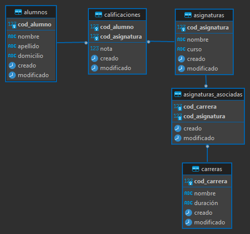

Problema 1.2
Se desea diseñar una base de datos para una Universidad que contenga información sobre los alumnos, las asignaturas y las carreras que pueden estudiar.
Construir un modelo E-R y pasarlo posteriormente a un esquema relacional teniendo en cuenta las siguientes restricciones.
- • Un alumno puede estar matnculado en muchas asignaturas
- • Una asignatura sólo puede pertenecer a una sola carrera.
- • Una carrera puede tener muchas asignaturas
Diagrama Entidad - Relacion

Modelo relacional
Script
/* Definiciones de tablas*/
CREATE DATABASE universidad_db;
USE universidad_db;
CREATE TABLE IF NOT EXISTS ALUMNOS(
cod_alumno INT UNSIGNED AUTO_INCREMENT NOT NULL PRIMARY KEY,
nombre VARCHAR(100) NOT NULL COMMENT "Nombre de alumno",
apellido VARCHAR(100) NOT NULL COMMENT "Apellido de alumno",
domicilio VARCHAR(50) DEFAULT "" COMMENT "Direccion de alumno",
creado TIMESTAMP DEFAULT CURRENT_TIMESTAMP COMMENT "Fecha de creación de registros",
modificado TIMESTAMP DEFAULT CURRENT_TIMESTAMP ON UPDATE CURRENT_TIMESTAMP COMMENT "Fecha de actualización de registros"
) ENGINE = InnoDB DEFAULT CHARSET "utf8mb4" COMMENT "Tabla de alumnos de la universidad";
CREATE TABLE IF NOT EXISTS ASIGNATURAS(
cod_asignatura INT UNSIGNED AUTO_INCREMENT NOT NULL PRIMARY KEY COMMENT "Código de asignatura",
nombre VARCHAR(100) NOT NULL COMMENT "Nombre de asignatura",
curso VARCHAR(100) NOT NULL COMMENT "Curso o grado de la asignatura",
creado TIMESTAMP DEFAULT CURRENT_TIMESTAMP COMMENT "Fecha de creación de registros",
modificado TIMESTAMP DEFAULT CURRENT_TIMESTAMP ON UPDATE CURRENT_TIMESTAMP COMMENT "Fecha de actualización de registros"
)ENGINE = InnoDB DEFAULT CHARSET "utf8mb4" COMMENT "Tabla de asignaturas de la universidad";
CREATE TABLE IF NOT EXISTS CALIFICACIONES(
cod_alumno INT UNSIGNED NOT NULL COMMENT "Referencia a un alumno",
cod_asignatura INT UNSIGNED NOT NULL COMMENT "Referencia a una asignatura",
nota DECIMAL(3,2) DEFAULT 0.00 COMMENT "Calificacion individual",
creado TIMESTAMP DEFAULT CURRENT_TIMESTAMP COMMENT "Fecha de creación de registros",
modificado TIMESTAMP DEFAULT CURRENT_TIMESTAMP ON UPDATE CURRENT_TIMESTAMP COMMENT "Fecha de actualización de registros",
PRIMARY KEY(cod_alumno, cod_asignatura)
) ENGINE = InnoDB DEFAULT CHARSET "utf8mb4" COMMENT "Tabla de calificaciones de la universidad";
CREATE TABLE IF NOT EXISTS CARRERAS(
cod_carrera INT UNSIGNED NOT NULL AUTO_INCREMENT PRIMARY KEY COMMENT "Código de carrera",
nombre VARCHAR(50) NOT NULL COMMENT "Nombre de carrera",
duración VARCHAR(20) NOT NULL COMMENT "Duración de la carrera",
creado TIMESTAMP DEFAULT CURRENT_TIMESTAMP COMMENT "Fecha de creación de registros",
modificado TIMESTAMP DEFAULT CURRENT_TIMESTAMP ON UPDATE CURRENT_TIMESTAMP COMMENT "Fecha de actualización de registros"
)
CREATE TABLE IF NOT EXISTS ASIGNATURAS_ASOCIADAS(
cod_carrera INT UNSIGNED NOT NULL COMMENT "Referencia a una carrera",
cod_asignatura INT UNSIGNED NOT NULL COMMENT "Referencia a una asignatura",
creado TIMESTAMP DEFAULT CURRENT_TIMESTAMP COMMENT "Fecha de creación de registros",
modificado TIMESTAMP DEFAULT CURRENT_TIMESTAMP ON UPDATE CURRENT_TIMESTAMP COMMENT "Fecha de actualización de registros",
PRIMARY KEY(cod_carrera, cod_asignatura)
);
/* Constraints de calificaciones*/
ALTER TABLE CALIFICACIONES
ADD CONSTRAINT FK_calificaciones_alumnos
FOREIGN KEY(cod_alumno)
REFERENCES ALUMNOS(cod_alumno)
ON DELETE CASCADE ON UPDATE NO ACTION;
ALTER TABLE CALIFICACIONES
ADD CONSTRAINT FK_calificaciones_asignaturas
FOREIGN KEY(cod_asignatura)
REFERENCES ASIGNATURAS(cod_asignatura)
ON DELETE CASCADE ON UPDATE NO ACTION;
/* Constraints de asignaturas asociadas*/
ALTER TABLE ASIGNATURAS_ASOCIADAS
ADD CONSTRAINT FK_asigasociadas_asignaturas
FOREIGN KEY(cod_asignatura)
REFERENCES ASIGNATURAS(cod_asignatura)
ON DELETE CASCADE ON UPDATE NO ACTION;
ALTER TABLE ASIGNATURAS_ASOCIADAS
ADD CONSTRAINT FK_asigasociadas_carreras
FOREIGN KEY(cod_carrera)
REFERENCES CARRERAS(cod_carrera)
ON DELETE CASCADE ON UPDATE NO ACTION;